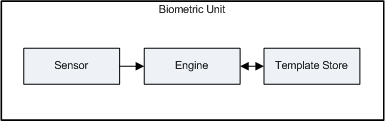

Biometric devices are manufactured in a wide variety of types and configurations. The Windows Biometric Framework addresses this variety by providing an extensible architecture that enables third party developers to create custom plug-in components. The primary component is a software object called a biometric unit. Biometric units expose the capabilities of a device to the framework through a standard interface that consists of sensor, engine, and storage adapters. Biometric units and their constituent components are discussed in the following topics.
The central component of the Windows Biometric Framework plug-in architecture is the biometric unit, a software object that exposes the capabilities of a biometric device to the framework through a standard interface.
A single physical sensor is associated with each biometric unit. The sensor captures biometric data and may also, depending on its hardware capabilities, perform other biometric operations such as template matching and storage. Sensors that do not support onboard matching or storage require additional software modules to perform these functions. For more information, see Adapters.
The following illustration shows how data flows through a biometric unit. Essentially, the data flow forms a type of pipeline. The initial input to the pipeline is a biometric sample captured by a physical sensor. The engine attempts to match the sample to templates that already exist in the template store or, if no match is found, builds a new template from repeated physical samples and saves the template in the store.

When the Windows Biometric Service starts or when it receives a hardware notification from the Plug and Play manager, it scans for any hardware that supports the well-known interface GUID_DEVINTERFACE_BIOMETRIC_READER (E2B5183A-99EA-4cc3-AD6B-80CA8D715B80). For each biometric device discovered it then:
After a biometric service provider (BSP) accepts a biometric unit, it configures the unit and assigns it to a sensor pool. For more information, see Sensor Pools. The unit is configured by loading the appropriate adapters, connecting to a template store, and possibly changing the operating mode. A biometric unit can be configured to operate in one of two modes:
When a biometric unit is moved from one sensor pool to another, its adapters are unloaded and it is reconfigured for the new sensor pool. The identity of the biometric unit remains constant; only the hardware configuration and adapter plug-ins change.
When the Windows Biometric Service shuts down or when the Plug and Play manager notifies it that a unit has been removed, the service deletes all biometric units.
Plug-in software components called adapters connect a biometric unit to its underlying hardware and supply any functionality that may be missing from the sensor hardware. There are three types of adapters that you can create:
Adapters can be loaded and unloaded at runtime. This enables the Windows Biometric Service to dynamically reconfigure a biometric unit by connecting it to a different set of adapters.
Finally, each of the sensor, engine, and storage adapter interfaces expose two methods, ControlUnit and ControlUnitPrivileged, that enable client applications to access custom adapter capabilities defined by the vendor. This allows the vendor to define an almost unlimited set of control operations for a device. Further, by choosing which function to implement, a vendor can choose to make some control operations available to non-privileged users while restricting other operations to privileged users.
For more information about how to create adapters, see Create adapter plug-ins.
Because the objective is fast response overall, the performance of an adapter isn't specified in terms of time limits on specific routines. Instead, performance is specified as a set of requirements for the overall user experience.
There are two requirements:
These numbers are not arbitrary. Numerous studies have shown that human beings tend to experience everything that happens within a two-second interval as part of the "now" moment. If event A and event B happen within two seconds of each other, people perceive those events as being simultaneous. If the events are separated by more than about three seconds, people think there's a delay—they feel that something is "taking too long." So this is an issue of hardwired human psychology.
Â
Â